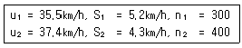
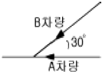
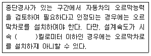
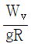
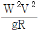
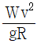
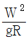

교통기사 (2005-03-06 기출문제)
1과목: 교통계획
1. 다음 중 사람 통행실태조사방법이 아닌 것은?
- 패쇄선(Cordon Line)조사
- 스크린 라인(Screen Line)조사
- 가구방문(Home Interview)조사
- 확률적 배정(Probabilistic Assingment)조사
(정답률: 알수없음)

2. 교통사업평가시 고려되는 차량운행비(Vehicle Operating Costs)중 고정비(Fixed Cost)가 아닌 것은?
- 운전사 임금
- 보험료
- 세금
- 연료비
(정답률: 알수없음)
3. 일평균교통량 (ADT: Average daily traffic)에 관한 설명으로 맞는 것은?
- 1년간 총통과차량 대수를 말하는 것으로 한 지역의 연간 통행량 산출에 사용된다.
- 첨두시내의 교통량 변화, 교통용량의 한계 산출에 사용된다.
- 도로의 현재 통행 수요 파악, 도로상의 서비스 수준 평가, 간선도로 체계의 개발에 사용된다.
- 첨두시의 첨두 길이 및 첨두 정도 판단, 교통제어방법 결정에 사용된다.
(정답률: 알수없음)
4. 중량전철(지하철 등)에 비해 경전철(LRT)의 특성은?
- 소음이 매우 심하다.
- 수송용량이 많다.
- 배차간격을 줄일 수 있다.
- 주행속도가 빠르다.
(정답률: 알수없음)
5. 주거 통행발생의 설명 변수로 적합치 않는 것은?
- 승용차 보유대수
- 가구 소득
- CBD로부터의 거리
- 건물상면적
(정답률: 알수없음)
6. 4단계 교통수요추정방법에 대한 설명으로 옳지 않은 것은?
- 계획가나 분석가의 주관이 작용할 때도 있다.
- 총체적 자료에 의존하기 때문에 통행자의 총체적ㆍ평균적 특성만 산출될 뿐 행태적 측면은 거의 무시된다.
- 현재 교통 여건을 지배하고 있는 교통체계의 메커니즘이 장래에는 크게 변한다는 기본적인 가정을 토대로 하고 있다.
- 통행발생, 통행분포, 교통수단선택, 통행배정의 4단계로 나누어 순서적으로 통행량을 구하는 기법이다.
(정답률: 91%)
7. 전국 및 광역 교통량 조사에 관한 설명 중 틀린 것은?
- 상시조사는 년간 일정한 간격으로 측정하되 한번에 연속적으로 통상 7일동안 시간별 교통량을 측정하고 기록한다.
- 보정조사는 상시조사지점이 아니면서 요일별 및 계절별(또는 월별)교통량 변동패턴을 조사할 필요가 있는 곳에서 한다.
- 도시지역의 전역조사 지점은 좀 더 조밀하게 분포되며 반면 조사회수는 지방부 도로에서보다 적다.
- 상시조사의 조사지점은 전국적으로 여러 가지 도로종류별로 분포된다.
(정답률: 알수없음)
8. 교통정보체계 구축방향에 대한 설명 중 틀린 것은?
- 정보내용의 코드체계를 표준화 시킨다.
- 교통정보가 공유되지 않도록 특수체계를 사용한다.
- 모집되어야 하는 자료목록을 작성한다.
- 국토정보체계의 sub-system 이 되도록 한다.
(정답률: 100%)
9. 차두(車頭)간격에 대한 설명으로 가장 알맞은 것은?
- 차량의 앞끝에서 뒷차량의 뒤끝 까지의 거리
- 차량의 뒤끝에서 뒷차량의 앞끝 까지의 거리
- 차량의 뒤끝에서 뒷차량의 뒤끝 까지의 거리
- 차량의 앞끝에서 뒷차량의 앞끝 까지의 거리
(정답률: 알수없음)
10. 교통대안들을 평가하기 위한 방법으로 효율(efficiency) 평가방법과 효과(effectiveness)평가방법이 있다. 다음 중 두 범주의 방법론이 옳게 연결된 것은?
- 효과평가방법 : B/C 분석
- 효과평가방법 : 순현재가치법
- 효율평가방법 : 순위기법
- 효율평가방법 : 수익율법
(정답률: 알수없음)
11. 버스(B)와 지하철(S)간의 선택행태를 분석하고자 자료를 수집하여 계산한 결과, UB(버스의 효용함수)는 -0.18, US(지하철의 효용함수)는 -1.15가 산출되었다. Logit모형을 이용하여 각 교통수단의 선택할 확률을 구한 값은?
- PB = 0.55, PS = 0.45
- PB = 0.72, PS = 0.28
- PB = 0.86, PS = 0.14
- PB = 0.91, PS = 0.09
(정답률: 알수없음)
12. 중복 산정을 피하기 위해 경제성 평가에서 항상 제외되는 비용 항목은?
- 요금
- 건설비
- 차량운행비용
- 주차료
(정답률: 알수없음)
13. 통행발생모형에서 일반적으로 다중회귀분석모형이 적용되고 있는데 이에 대한 설명으로 옳지 않는 것은?
- 모형의 적합도를 판단할수 있는 결정계수(R2)가 클수록 즉 1에 가까울수록 좋은 회귀모형이라 할 수 있다.
- 다중회귀모형에서 모든 독립변수들은 서로 독립적이고 각 변수간의 상관관계는 높을수록 좋다.
- 이 모형식의 종속변수는 통행목적별 통행유출과 통행유입량이다.
- 통행유입을 예측하는데 사용되는 설명변수는 산업별 고용자수, 상품판매액 등이다.
(정답률: 알수없음)
14. 기존의 버스전용도로(Busway)로 이용되던 시설을 버스를 포함하는 다인승 차로(HOV lane)로 전환시 나타날 수 있는 변화가 아닌 것은?
- 다인승 차량 승객의 통행시간 감소
- 기존 버스 노선의 승객 증가
- 다인승 차로 주변 도로 정체 완화
- 기존 버스노선 운행 효율성 감소
(정답률: 알수없음)
15. 사람 통행 실태조사 결과에 따른 전수화(全數化)과정으로 옳은 것은?
- 통행자ㆍ비통행자 구분→목적ㆍ수단통행구분→기본O-D표 구축→전수화O-D표 도출→신뢰성 검증
- 통행자ㆍ비통행자 구분→지역별통행구분→전수화계수 산출→기본O-D표 구축→전수화O-D표 도출
- 통행자ㆍ비통행자 구분→가구면접조사자료 수정-기본O-D표 구축→전수화O-D표 도출→신뢰성 검증
- 통행자ㆍ비통행자구분→목적ㆍ수단통행구분→전수화O-D표 도출→기본O-D표 구축→신뢰성 검증
(정답률: 알수없음)
16. 조사 및 연구대상지역의 범위를 나타내는 선을 폐쇄선 혹은 경계선(cordon line)이라고 하는데 이러한 폐쇄선을 선정할 때 고려하여야 할 사항이 아닌 것은?
- 폐쇄선을 횡단하는 도로는 가능한 적게 한다.
- 가능한 넓은 지역이 포함되도록 한다.
- 행정구역의 경계선과 가능한 일치시킨다.
- 도시주변에 인접한 위성도시나 장래 도시화지역 등은 가급적 패쇄선 내에 포함시킨다.
(정답률: 알수없음)
17. 교통시설 투자의 할인율(discount rate)선택에 관한 설명중 옳은 것은?
- 초기 투자가 적고 운영비가 클 경우 할인율을 인상한다면 프로젝트의 총비용이 감소되는 결과를 가져온다.
- 할인율을 인상한다면 장래의 편익을 높여준다.
- 동일한 할인율을 적용했을 때 서비스 수명기간과 총 비용과의 관계는 선형함수 관계를 보인다.
- 교통시설 대부분은 서비스 수명이 길므로 0.1 수준의 할인율이라는 가정아래 40년 이상의 기간을 적용해도 무방하다.
(정답률: 알수없음)
18. 최근 활발히 진행되는 ITS(Intelligent Transportation Systems)의 목적이 아닌 것은?
- 도로이용의 효율성을 제고시키기 위하여
- 도로의 교통안전을 도모하기 위하여
- 환경에 미치는 악영향을 감소시키기 위하여
- 통행 발생량과 도착량을 정확히 예측하기 위하여
(정답률: 80%)
19. Fratar법과 유사하게 현재의 통행분포패턴에 성장률을 적용하여 분포를 예측하는 성장률법이 아닌 것은?
- Gravity 법
- 균일성장률법
- Detroit 모형
- 평균성장률법
(정답률: 알수없음)
20. 4단계 수요추정 중 장래의 존별 통행 발생량을 산출한 후 통행분포(Trip distribution)전에 이용 가능한 교통 수단 분담율을 산정하여 수단 분담율을 도출하는 방법은?
- 통행단 모형 (Trip-end model)
- 중력 모형 (Gravity model)
- 카테고리 분석법 (Category analysis)
- 통행 교차 모형 (Trip exchange model)
(정답률: 알수없음)
2과목: 교통공학
21. 신호교차로에서 딜레마 죤(Dilemma Zone)을 없애기 위한 현시간 황색시간을 산출하는데 고려되지 않는 사항은?
- 주기
- 감속도
- 접근속도
- 차량길이
(정답률: 70%)
22. 어떤 특정한 법칙없이 T형 교차로의 한 방향에 도착하는 차량의 70%가 좌회전하고 나머지는 우회전 한다고 한다. 10대의 차량이 한 방향에 도착했을때 정확히 3대가 우회전 할 확률은 얼마인가?
- 0.009
- 0.267
- 0.367
- 0.454
(정답률: 알수없음)
23. 운전자가 실제로 느끼는 속도이며 속도규제, 신호기설치 위치선정, 신호시간계산, 사고분석시 등에 이용되는 속도는?
- 주행속도
- 자유속도
- 구간속도
- 지점속도
(정답률: 알수없음)
24. 신호 교차로에서 유효녹색시간을 구하는 식은?
- 녹색시간+진행연장시간-출발손실시간
- 녹색시간+황색시간-출발손실시간
- 녹색시간-출발손실시간-소거손실시간
- 녹색시간+황색시간-소거손실시간
(정답률: 알수없음)
25. 임계밀도(Critical density)상태 때의 교통량은?
- 0이다.
- 최대 교통용량이다.
- 용량보다 적다.
- 밀도와 상관없다.
(정답률: 알수없음)
26. 도시 및 교외 간선도로에서 도로의 서비스수준을 나타내는 효과척도는?
- 교통량 대 용량비
- 지체도
- 평균통행속도
- 지체시간 백분율
(정답률: 알수없음)
27. 어떤 주차장에서 일정 기간(통상 하루)동안 주차한 총 댓수를 무엇이라 하는가?
- 회전율(Turnover)
- 주차부하(Parking load)
- 주차량(Parking volume)
- 점유율(Occupancy)
(정답률: 50%)
28. 포화교통유율(saturation flow-rate)은 포화용량이라고도 한다. 다음 중 포화용량(s)과 포화차두시간(h)과의 관계식으로 옳은 것은?
- h=s/3600
- s=100/h
- h=1000/s
- s=3600/h
(정답률: 알수없음)
29. 도로교통류의 특성을 기술하는 3가지의 기본변수는?
- 교통량, 밀도, 속도
- 교통량, 밀도, (통행)용량
- (통행)용량, 밀도, 속도
- (통행)용량, 속도, 교통량
(정답률: 알수없음)
30. 신호교차로 용량분석의 이상적인 조건에 대한 설명 중 틀린 것은?
- 차로폭은 3.5m이상
- 교통류는 직진이며, 모두 승용차로 구성
- 접근부 정지선의 상류부 75m 이내에 노상 주ㆍ정차 시설 없음
- 접근부 정지선의 상류부 60m 이내에 진출입 차량이 없을 것
(정답률: 알수없음)
31. 국도의 제한속도를 설정하기 위하여 조사를 계획하고자 하며, 주행자동차 속도의 표준편차가 10km/h, 허용오차를 2km/h로 할 때 필요한 표본수는? (단, 통계의 신뢰도는 95%이며 이때의 통계신뢰도 계수는 2이다.)
- 100대
- 150대
- 200대
- 400대
(정답률: 알수없음)
32. 다음 중 고정식 신호등의 장점에 해당되지 않는 것은?
- 다수의 보행인이 존재하는 장소에 적합
- 구조가 간단하고 설치비용이 저렴
- 인접에 위치한 신호등과의 연동화가 용이
- 교통량의 시간대별 변동이 클 경우 대응이 용이
(정답률: 알수없음)
33. 서비스수준별 교통류의 상태에 관한 설명으로 틀린 것은?
- A : 사용자 개개인들은 교통류 내의 다른 사용자의 출현에 실질적으로 영향을 받지 않는다.
- C : 교통류 내의 다른 차량과의 상호작용으로 인하여 통행에 상당한 영향을 받기 시작한다.
- E : 교통량이 조금 증가하거나 작은 혼란이 발생하여도 와해 상태가 발생한다.
- FFF : 과도한 교통수요로 혼잡이 심각한 상태이며 차량이 대상구간의 전방 신호교차로를 통과하는데 평균적으로 2~3주기 정도의 시간이 필요하다.
(정답률: 알수없음)
34. 고속도로 엇갈림 구간에서 별도의 결정절차를 따르지 않을 때 연결로-연결로부의 엇갈림 구간의 길이는 설계수준 상 최소 몇 m 정도는 확보해야 하는가?
- 150m
- 180m
- 200m
- 250m
(정답률: 알수없음)
35. 황색신호 주기 결정시 주요 요인이 아닌 것은?
- 반응 시간
- 감속도
- 실용 교통 용량
- 접근 속도
(정답률: 알수없음)
36. 어느 도로에 대한 개선이 이루어지기 전과 후의 속도를 측정한 결과가 아래와 같다. 95% 유의수준에서 도로개선으로 인한 속도증가 효과가 있는지에 대해 검정하여라.

- 감소
- 알 수 없다
- 같다
- 증가
(정답률: 알수없음)
37. 달리던 차량이 30m를 주행한 후 정지하였다. 이때의 노면 마찰계수는 0.12였는데 초기속도는 얼마인가?
- 28.2km/h
- 29.2km/h
- 30.2km/h
- 31.2km/h
(정답률: 알수없음)
38. 한산한 교통류에서 발생되는 차두시간의 분포를 나타내는 확률분포는?
- 정규분포
- 지수분포
- 감마분포
- 기하분포
(정답률: 알수없음)
39. 가변차로제의 장점이 아닌 것은?
- 기존도로를 효율적으로 활용한다.
- 일방통행제와 대비할 때 우회도로를 필요로 하지 않는 다.
- 설치 및 운영이 간단하다.
- 가변일방차로제와 비교할 때 종방향교통이 우회할 필요가 없다.
(정답률: 55%)
40. 임의도착 교통류에서 500초 동안 100대의 차두시간을 측정한 결과 평균 5.03, 분산 8.⑤를 얻었다. 이 때 측정한 차두시간이 얼랑(Erlang)분포를 따를 때, 매개변수 λ와 k의 값은?
- λ=0.501, k= 3
- λ=0.492, k= 2
- λ=0.537, k= 2
- λ=0.625, k= 3
(정답률: 알수없음)
3과목: 교통시설
41. 자동차전용도로(고속도로)의 경우 버스승강장(Bus flat form)의 폭은 얼마를 표준으로 하여야 하는가?
- 1.5m
- 2.0m
- 2.5m
- 3.0m
(정답률: 알수없음)
42. 교차로에 설치되는 횡단보도의 최소폭은?
- 2m
- 3m
- 4m
- 6m
(정답률: 알수없음)
43. 교통통제설비가 갖추어야 기본적인 요건에 해당하지 않는 것은?
- 운전자의 주의를 끌기에 충분해야 한다.
- 적절한 반응시간을 확보할 수 있도록 위치해야 한다.
- 교통류를 규제할 수 있는 법적인 근거를 확보하고 있어야 한다.
- 분명하고 다양한 의미를 지녀야 한다.
(정답률: 알수없음)
44. 설계속도 80km/h, 적용 최대 편경사 6% 일 경우 차도의 최소 평면곡선반경은?
- 140m
- 200m
- 280m
- 460m
(정답률: 알수없음)
45. 교통신호등 설치시 고려할 대상과 가장 거리가 먼 것은?
- 차량 교통량
- 교통사고 수
- 보행자 통행량
- 지형조건
(정답률: 알수없음)
46. 다음은 중앙분리대의 기능을 설명한 것이다. 옳지 않은 것은?
- 유턴(U-Turn)을 용이하게 할 수 있어 교통류의 혼잡을 피할 수 있다.
- 도로표지, 기타 교통관제시설 등을 설치할 수 있는 장소로 제공된다.
- 광폭 분리대일 경우 사고 및 고장 차량이 정지할 수 있는 여유공간을 제공한다.
- 대향차로의 오인(誤認)을 방지한다.
(정답률: 알수없음)
47. 설계기준차량으로 대형 자동차의 길이는 얼마인가?
- 9.0m
- 11.2m
- 13.0m
- 16.7m
(정답률: 알수없음)
48. 교차로에 접근하는 속도 50km/h의 A차량과 속도 45km/h의 B차량이 아래 그림과 같이 교차할 때 B차량에 대한 A차량의 상대속도는?

- 5.0km/h
- 8.0km/h
- 11.0km/h
- 14.0km/h
(정답률: 알수없음)
49. 설계속도 60 km/h이상 80 km/h미만인 지방지역의 일반도로차로의 최소폭은?
- 2.75m
- 3.00m
- 3.25m
- 3.50m
(정답률: 알수없음)
50. 어느 건물의 주차용량이 50대, 주차이용 대수가 330대, 주차효율은 0.92, 주차장이 하루 18시간 개방된다고 할 때, 평균주차시간은?
- 3.2시간
- 2.2시간
- 3.5시간
- 2.5시간
(정답률: 알수없음)
51. 버스정류장의 제원(고속도로)중 설계속도가 100km/h일 때 가속차로의 길이는? (단, 직접식인 경우)
- 70m
- 115m
- 160m
- 190m
(정답률: 알수없음)
52. 주차장 설계에서 설계기준자동차는 어떤 차종으로 하는가?
- 주차장이 피크로 될 때에 가장 영향을 주는 차종
- 주차장 이용 차량 중 가장 큰 차종
- 주차장 이용 차량 중 가장 작은 차종
- 차량문의 여닫이가 가장 큰 차종
(정답률: 75%)
53. 주차장계획을 위한 주차수요의 예측방법과 가장 거리가 먼것은?
- 주차 원단위법
- 과거 추세 연장법
- 자동차 기ㆍ종점 조사에 의한 방법
- 자동차 번호판조사에 의한 방법
(정답률: 알수없음)
54. 다음의 도로의 부속시설에 대한 설명 중 옳지 않은 것은?
- 고속도로에서 우측 길어깨의 폭원이 2.50m 미만일 경우에는 비상주차대를 설치해야 한다.
- 긴급제동시설은 본선 도로의 우측에 설치하는 것이 원칙이다.
- 휴게시설의 배치는 모든 휴게시설 상호간에 표준 10km, 최대 50km 정도 떨어지는 것이 바람직하다.
- 버스정류소는 버스승객의 승하차를 위하여 본선의 외측차로를 그대로 이용할 경우 그 공간을 의미한다.
(정답률: 알수없음)
55. 도로의 주요구조부를 보호하거나 차도의 효율성을 증대시키기 위하여 차도에 접하여 설치하는 부분은?
- 변속차로
- 보도
- 교통섬
- 길어깨
(정답률: 알수없음)
56. 노면표시에 사용되는 색상의 설명으로 옳은 것은?
- 황색 : 반대방향의 교통류 분리
- 백색 : 교통섬의 윤곽선, 도로변의 정차금지표시
- 녹색 : 동일방향의 교통류 분리
- 적색 : 주로 규제를 뜻하며, 반대 노면의 분리
(정답률: 알수없음)
57. 교통통제를 실시함에 있어서 유의할 사항으로 옳지 않은 것은?
- 교통용량증대 대책의 일환으로서 적극 추진할 것
- 도로를 효과적으로 활용할 것
- 실시 이전에 홍보와 적절한 지도단속을 할 것
- 사전, 사후의 효과측정은 무시할 것
(정답률: 70%)
58. 도로의 시거에 관한 설명 중 옳은 것은?
- 앞지르기시거를 측정하기 위한 기준으로서 운전자의 눈높이를 1.5m로 하며 맞은 편에서 오는 차량의 높이를 1.8m로 한다.
- 시거는 차로중심선을 따라 측정한 거리를 의미한다.
- 일반적으로 피주시거가 정지시거보다 짧다.
- 일반적으로 정지시거가 앞지르기시거보다 길다.
(정답률: 알수없음)
59. 고속도로의 비상주차대의 일반적인 설치 간격으로 옳은 것은?
- 300m
- 500m
- 650m
- 750m
(정답률: 알수없음)
60. 평면교차로에서의 도류화설계를 위한 기본원칙과 가장 관계가 먼 것은?
- 곡선부는 적절한 곡선반경과 폭을 가져야 한다.
- 운전자가 한번에 한가지 이상의 의사결정을 하지 않도록 해야 한다.
- 교통제어시설은 도류화의 일부가 아니므로 이를 배제하여 교통섬을 설계하여야 한다.
- 속도와 경로를 점진적으로 변화시킬 수 있도록 접근로의 단부를 처리해야 한다.
(정답률: 82%)
4과목: 도시계획개론
61. 도시를 구성하는 토지와 시설에 대한 물리적 계획의 3대요소가 아닌 것은?
- 밀도
- 배치
- 동선
- 정비
(정답률: 알수없음)
62. 특별시장, 광역시장, 시장 또는 군수가 수립하여야 하는 도시기본계획의 내용과 가장 관계가 먼 것은?
- 토지의 이용 및 개발에 관한 사항
- 환경의 보전 및 관리에 관한 사항
- 광역계획권의 공간구조와 기능분담에 관한 사항
- 지역적 특성 및 계획의 방향ㆍ목표에 관한 사항
(정답률: 알수없음)
63. 현행의 국토의계획및이용에관한법률상 지정되어 있지 않은 용도지역은?
- 보전녹지지역
- 준농림지역
- 생산관리지역
- 자연환경보전지역
(정답률: 알수없음)
64. 다음 중 라이트와 스테인에 의해 계획된 레드번(Radburn) 주택단지계획에 대한 설명으로 옳지 않은 것은?
- 주거지 내에 통과교통을 허용하였으며 교차점에는 횡단보도를 설치한다.
- 자동차는 쿨데삭(Cul-de-sac)이란 대로에 의하여 이용되도록 한다.
- 중앙에는 대공원을 설치한다.
- 주거구는 슈퍼블록(Super Block) 단위로 계획한다.
(정답률: 67%)
65. 건축면적/대지면적으로 정의되며 거주 환경의 쾌적성을 확보하고 시민의 위생과 안전도를 강화하며 화재 발생시 연소방지 등을 위한 지상 공지의 확보를 규제목적으로 하는 것은?
- 공지율
- 건폐율
- 도로율
- 환지율
(정답률: 알수없음)
66. 다음 중 근린분구 단위의 중심적 시설이 되는 것은?
- 진료소
- 초등학교
- 중학교
- 도서관
(정답률: 알수없음)
67. 도시계획에서 고도지구를 지정하는 이유는?
- 건축물의 용도제한
- 상업 및 업무지구 조성
- 건축물의 높이제한
- 건폐율의 규제
(정답률: 알수없음)
68. 다음 중 가로의 기능별 배치기준에서 주간선도로와 주간선도로의 간격으로 가장 적합한 것은?
- 300m 내외
- 100m 내외
- 5,000m 내외
- 1,000m 내외
(정답률: 알수없음)
69. 다음 도시경제이론 중 과거 두 시점간의 국가경제, 지역경제, 산업구조를 분석하여 당해 지역의 어떤 산업이 건전하게 성장하는가 또는 성장할 것인가를 파악하는 방법은?
- 지역성장모형(Regional Growth Theory)
- 경제기반이론(Economic Base Theory)
- 변이할당분석(Shift-Share Analysis)
- 투입산출분석(Input-Output Analysis)
(정답률: 알수없음)
70. 다음 중 도로의 위계상 이동성은 가장 높은 반면 접근성이 가장 낮은 것은?
- 주간선도로
- 보조간선도로
- 국지도로
- 도시고속도로
(정답률: 알수없음)
71. 다음 중 격자형 도로망에 대한 설명으로 옳은 것은?
- 중심지를 기점으로 주요간선로에 따라 도시개발축이 형성된다.
- 인구 100만 이상 대도시계획에 적합하며 횡적인 연결은 환상선으로 이루어진다.
- 지형이 평탄한 도시에 적합하지만 도로기능의 다양성은 없다.
- 교통의 흐름이 도심집중이 강하다.
(정답률: 알수없음)
72. 다음 중 다핵심이론(多核心理論)의 지구분류에 해당되지않는 것은?
- 저소득주택지구
- 점이지대
- 교외공업지구
- 중공업지구
(정답률: 알수없음)
73. 주거지역의 세분화된 분류를 가장 올바르게 나열한 것은?
- 제1종 전용주거지역, 제2종 전용주거지역, 제1종 준주거지역, 제2종 준주거지역, 일반주거지역
- 전용주거지역, 준주거지역, 일반주거지역
- 전용주거지역, 준주거지역, 제1종 일반주거지역, 제2종 일반주거지역
- 제1종 전용주거지역, 제2종 전용주거지역, 제1종 일반주거지역, 제2종 일반주거지역, 제3종 일반주거지역, 준주거지역
(정답률: 50%)
74. 본엘프(Woonerf)에 관한 설명 중 옳은 것은?
- 보행자가 도로의 측면을 이용하도록 차도와 보도를 분리하는 형태이다.
- 네덜란드에서 처음 등장한 보행자전용도로의 유형이다.
- 보차공존도로의 한 유형이다
- 차량통행이 위주이고 보행자 통행이 부수적이다.
(정답률: 알수없음)
75. 특벽시장, 광역시장, 시장 또는 군수는 몇년마다 관할구역의 도시기본계획에 대하여 그 타당성 여부를 전반적으로 재검토하여 이를 정비하여야 하는가?
- 5년
- 10년
- 15년
- 20년
(정답률: 알수없음)
76. 다음 중 지적공부에 해당되지 않는 것은?
- 토지대장
- 건축물대장
- 지적도
- 임야대장
(정답률: 73%)
77. 현행 국토의계획및이용에관한법률에 따른 도시지역에 있어서의 상업지역 분류에 해당되지 않는 것은?
- 근린상업지역
- 노선상업지역
- 유통상업지역
- 일반상업지역
(정답률: 47%)
78. 도시계획에 있어서의 계획인구를 산정하기 위한 방법 중에서 과거인구의 추세에 의한 예측방법이 아닌 것은?
- 로지스틱곡선법
- 최소자승법
- 등차급수법
- 비교유추법
(정답률: 알수없음)
79. 도시의 무질서한 확산을 방지하고 도시주변의 자연환경의 보전을 통한 도시민의 건전한 생활환경을 확보하기 위하여 도시의 개발을 제한하는 것을 목적으로 하는 것은?
- 특정시설제한구역
- 개발제한구역
- 도시개발예정구역
- 광역계획구역
(정답률: 알수없음)
80. 도로에 대한 설명 중 옳지 않은 것은?
- 도로는 망으로 구성됨으로써 지역과 시설을 연계하는 기능을 가진다.
- 가구(街區)나 근린주구 등의 도시공간을 구획하는 기능을 가진다.
- 도로는 위계와 기능에 따라 계층적 구조를 갖는다.
- 도시환경정비에 있어 위생시설로써의 중요한 기능을 가진다.
(정답률: 알수없음)
5과목: 교통관계법규
81. 부설주차장 설치기준 중 제2종 근린생활시설의 면적이 1100m2일 경우 이 시설의 소요 주차대수는?
- 12대
- 10대
- 8대
- 6대
(정답률: 알수없음)
82. 주차장법에 정의되어 있는 주차장의 분류로 가장 타당한 것은?
- 노상주차장, 노외주차장, 부설주차장
- 노상주차장, 부설주차장, 지하주차장
- 야외주차장, 도로주차장, 부설주차장
- 허가주차장, 불법주차장, 부설주차장
(정답률: 알수없음)
83. 교통안전법에서의 용어의 정의가 틀린 것은?
- "선박"이라 함은 수상 또는 수중의 항행의 용에 공하는 선박류를 말한다.
- "항공기"라 함은 항공법에 의한 항공기를 말한다.
- "지정행정기관"이라 함은 정부조직법에 의한 중앙행정기관으로서 대통령령이 정하는 행정기관을 말한다.
- "차량"이라 함은 도로운송법에 의한 자동차ㆍ원동기장치자전거ㆍ긴급자동차 및 차마와 철도 및 궤도에 의하여 교통용으로 사용되는 용구를 말한다.
(정답률: 알수없음)
84. 다음 중 도로 구조의 보전과 교통의 원할을 기하기 위하여 도로의 관리청이 설치하는 도로표지(道路標識)는 어느 것인가?
- 통행금지표지
- 이정표지
- 교차점 또는 철도 건널목등의 전방거리표지
- 주차금지표지
(정답률: 알수없음)
85. 주차금지 장소를 설명한 것으로 틀린 것은?
- 소화전 또는 소화용방화물통의 흡수구나 흡수관을 넣는 구멍으로부터 5미터 이내의 곳
- 화재경보기로부터 8미터 이내의 곳
- 터널 안 및 다리 위
- 도로공사를 하고 있는 경우에는 그 공사구역의 양쪽 가장자리로부터 5미터 이내의 곳
(정답률: 50%)
86. 노면표지 중 중앙선표시는 노폭이 최소 몇 m 이상인 도로에 설치 하는가?
- 10m
- 8m
- 7m
- 6m
(정답률: 알수없음)
87. 다음 중 모든 차의 운전자가 일시정지하여야 하는 곳은?
- 교통정리가 행하여지고 있고 좌우를 확인할 수 없는 교차로
- 교통정리가 행하여지고 있지 아니하고 교통이 빈번한 교차로
- 비탈길의 고개 마루 부근
- 도로가 구부러진 부근
(정답률: 50%)
88. 도시지역의 도로 중 국지도로의 보도의 최소폭은?
- 1.5m
- 2.0m
- 2.25m
- 3.0m
(정답률: 알수없음)
89. 삼색등화로 표시되는 신호등에서 등화를 종으로 배열할 경우 순서로 맞는 것은?
- 위로부터 적색, 황색, 녹색의 순서로 한다.
- 위로부터 녹색, 황색, 적색의 순서로 한다.
- 위로부터 녹색화살표, 황색, 녹색 순서로 한다.
- 위로부터 녹색, 적색, 녹색화살표 순서로 한다.
(정답률: 알수없음)
90. 다음은 도시기본계획의 수립을 위한 공청회 및 의견청취에 대한 설명이다. 틀린 것은?
- 특별시장, 광역시장, 시장, 또는 군수는 공청회를 열어 주민 및 관계 전문가 등으로부터 의견을 들어야 한다.
- 공청회를 개최하고자 하는 때에는 개최예정일 1일전까지 1회이상 공고하여야 한다.
- 공청회에서 제시된 의견이 타당하다고 인정하는 때에는 이를 도시기본계획에 반영하여야 한다.
- 특별시장, 광역시장, 시장, 또는 군수는 도시기본계획 수립시 미리 당해 특별시, 광역시, 시, 또는 군의의회의 의견을 들어야 한다.
(정답률: 40%)
91. 도시교통정비지역으로 지정된 행정구역을 관할하는 시장 또는 군수는 몇년 단위의 도시교통정비기본계획을 수립하여야 하는가?
- 5년
- 10년
- 15년
- 20년
(정답률: 알수없음)
92. 다음 중 지방도에 해당되지 않는 것은?
- 군청소재지 상호간을 연결하는 도로
- 군청소재지로부터 면사무소소재지에 이르는 도로
- 도내의 비행장에서 이와 밀접한 관계가 있는 지방도를 연결하는 도로
- 도청소재지로부터 시청소재지에 이르는 도로
(정답률: 알수없음)
93. 도로정책심의회의 심의사항이 아닌 것은?
- 도로노선 및 도로예정지의 지정에 관한 사항
- 접도구역의 지정에 관한 사항
- 도로의 건설재원ㆍ장기계획 등에 관한 사항
- 유료도로 지정에 관한 사항
(정답률: 알수없음)
94. 제1종 지구단위계획구역안에서 건축물을 건축하고자 하는 자가 다음과 같이 대지의 일부를 공공시설부지로 제공하는 경우 당해 건축물에 대하여 완화할 수 있는 용적율은? (단, 중심상업지역내 2,000m2의 대지면적 중 200m2를 공공시설 부지로 제공할 경우)
- 1,633% 이내
- 1,750% 이내
- 1,867% 이내
- 1,983% 이내
(정답률: 알수없음)
95. 도시교통정비지역의 지정ㆍ고시는 다음 중 누가 하는가?
- 국무총리
- 건설교통부장관
- 경찰청장
- 행정자치부장관
(정답률: 50%)
96. 고속도로에서 야간에 차량고장시 고장차량표지 외에 사방 몇 미터 지점에서 식별할 수 있는 적색의 섬광신호ㆍ전기제등 또는 불꽃신호를 추가로 설치하여야 하는가?
- 200m
- 300m
- 400m
- 500m
(정답률: 알수없음)
97. 다음 중 차마가 도로의 중앙이나 좌측부분을 통행할 수 있는 경우가 아닌 것은?
- 도로가 일방통행으로 된 때
- 도로의 파손, 도로공사 그 밖의 장애 등으로 그 도로의 우측부분을 통행할 수 없는 때
- 도로의 우측부분의 폭이 그 차마의 통행에 충분하지 아니한 때
- 도로의 우측부분의 폭이 10미터가 되지 아니하는 도로에서 다른 차를 앞지르고자 하는 때
(정답률: 알수없음)
98. 노외주차장에서의 주차행위제한 대상에 포함되지 않는 행위는?
- 하역주차구획에 화물자동차를 주차하는 경우
- 정당한 사유없이 주차요금을 납부하지 아니하고 주차하는 경우
- 주차장안의 지정된 주차구획외의 곳에 주차하는 경우
- 주차장을 주차장외의 목적으로 이용하는 경우
(정답률: 알수없음)
99. 밤에 도로를 통행하는 때에 켜야 하는 등화가 아닌 것은?
- 자동차의 전조등
- 자동차의 차폭등
- 원동기장치자전거의 미등
- 견인되는 차의 실내등
(정답률: 알수없음)
100. 다음 빈칸에 적당한 말은?

- 30
- 40
- 50
- 60
(정답률: 알수없음)
6과목: 교통안전
101. 도로에서 시거불량이 사고원인인 지점의 개선대책으로서 적합하지 않은 것은?
- 장애물 제거
- 예고표지 설치
- 시선유도표지 설치
- 미끄럼방지 포장
(정답률: 알수없음)
102. 도로와 철도가 평면 교차하는 경우 그 교차각은 최소 얼마이상으로 하여야 하는가?
- 30°이상
- 45°이상
- 60°이상
- 90°이상
(정답률: 알수없음)
103. 다음 중 도로교통법의 제정 목적으로 가장 알맞은 것은?
- 육상에서 일어나는 모든 위험과 장해를 방지하고 제거하기 위한 것이다.
- 모든 교통에서 발생하는 위험과 장해를 방지하고 제거하여 안전하고 원활한 교통을 확보함을 목적으로 한다.
- 도로에서 일어나는 교통상의 모든 위험과 장해를 방지하고 제거하여 안전하고 원활한 교통을 확보함을 목적으로 한다.
- 안전하고 원활한 육상교통을 확보하기 위한 것이다.
(정답률: 67%)
104. 일반도로에 사용되는 도로표지는?
- 휴게소 안내표지
- 통행금지표지
- 도로상태 예고표지
- 기상상태 예고표지
(정답률: 알수없음)
1⑤. 기존 도로의 보수 작업은 통행에 지장을 초래할 뿐만 아니라 교통안전과도 관계가 깊다. 다음 어느 구간에 작업장 사고가 가장 많이 발생되는가?
- 작업장 시점구간
- 작업 구간내
- 작업장 종점구간
- 전 구간 동일
(정답률: 67%)
106. 위험도로 선정을 위해 사용되는 분석방법 중 미국의 교통연구원에서 발간한 교통사고 분석체계에 기술된 합리적인 방법으로 각지점의 사고율을 산정하고 그 지점의 사고율이 유사한 조건을 갖는 도로에 대한 사고율보다 현저히 높은 지의 여부를 검토하기 위한 절차에 근거한 것이며 사고발생 확률이 poisson 분포에 따른다는데서 출발하는 분석방법은?
- 교통사고 건수에 의한 방법
- 통계적 교통사고율 분석방법
- 교통사고 현황판에 의한 방법
- 교통사고 피해정도에 의한 방법
(정답률: 90%)
107. 교통사고지점에 대한 기술적인 검토는 크게 사고관련부문, 교통운영부문, 도로환경부문, 철도와의 교차부문으로 나눌수 있다. 이중 도로환경 부문의 검토사항과 가장 관계가 먼 것은?
- 시거
- 차두간격
- 포장상태
- 도로의 기하구조
(정답률: 알수없음)
108. 교차로에서의 사고 특성을 바르게 기술한 것은?
- 일반적으로 4지교차로가 3지교차로보다 사고율이 낮다.
- 교차로의 교통통제방법은 교통사고에 직접적인 영향을 미친다.
- 사고율은 부도로의 교통량보다 주도로의 교통량에 더 크게 영향을 받는다.
- 좌회전 교통량이 많을수록 사고율이 높아진다.
(정답률: 알수없음)
109. 교통사고로 인한 인명피해에 있어서 사망, 중상, 경상, 부상신고로 나눌때 부상신고란 며칠미만의 치료를 요하는 경우를 말하는가?
- 10일
- 7일
- 5일
- 3일
(정답률: 50%)
110. 속도제한구간을 설정하는 이유가 아닌 것은?
- 도로 및 교통조건에 적합한 속도보다 제한속도가 너무 높거나 낮으면 제한속도를 무시하는 경향이 있다.
- 단속가능할 정도의 속도제한이 효과적이다.
- 동일한 속도제한은 어떠한 도로조건이나 교통조건하에서도 타당성을 갖는다.
- 실제현장의 교통여건에 맞는 제한속도는 사고를 줄일 수 있다.
(정답률: 알수없음)
111. 개선사업 시행전 3년간의 연평균 사고건수가 10건이며, 연 평균 ADT가 6,000대인 한 교차로에 사고감소율 20%인 교통 안전 사업을 시행한 후 3년 동안에 예측되는 연평균 사고 감소 건수는? (단, 이 교차로의 사업시행후 3년 동안의 연평균 ADT는 7,000대로 예측된다.)
- 4.6건
- 2.3건
- 1.2건
- 5.9건
(정답률: 알수없음)
112. 운전면허소지자 20,000명의 지난 5년간 사고경력을 조사 하였다. 전체 교통사고는 5,000건이다. 지난 5년간 3회이상 교통사고를 일으킨 사람은 교통사고 상습자로 관리하고자 한다. 교통사고 상습자는 몇 명으로 추정되는가?
- 33명
- 44명
- 55명
- 66명
(정답률: 알수없음)
113. 교통안전대책을 수립하는데 있어 이동성과 안전성을 함께 제고하는 실질적인 조치에 해당되지 않는 것은?
- 운전자의 연령제한
- 도로의 고급화
- 개선된 차량 성능 및 조향장치
- 보다 안전한 차량 유형
(정답률: 80%)
114. 한 차량이 도로를 벗어나 높이 5m의 언덕 아래로 추락하였으며 도로의 끝으로부터 추락한 차량까지의 거리가 10m일 때, 이 차량이 도로를 벗어날 때의 속도(kph)는?
- 34.1
- 35.6
- 37.1
- 38.6
(정답률: 37%)
115. 곡선부의 설계시 원심력을 제어하기 위해 편경사를 설치하고 있다. 다음 중 편경사를 설계할 때 고려되어야 할 원심력을 옳게 표현한 것은 어느 것인가? (단, W:자동차의 총중량, v:자동차의 속도, R:곡선반경, g:중력가속도)




(정답률: 알수없음)
116. 사고지점도에 관한 다음의 설명 중 옳지 않는 것은?
- 희생자수로 나타내는 것이 일반적이다.
- 지방부에서는 1:50,000의 지도가 일반적으로 사용된다.
- 범례는 가능한 한 단순해야 한다.
- 사고가 집중적으로 발생하는 지점의 신속한 시각적 색인을 제공한다.
(정답률: 알수없음)
117. EPDO가 의미하는 것은?
- 등가사망사고
- 등가중상사고
- 등가경상사고
- 등가물피사고
(정답률: 알수없음)
118. 노변방호책의 설계시 고려사항이 아닌 것은?
- 차량의 경로나 정지한 지점이 인접차선을 침범하여도 상관없다.
- 견딜 수 있을 만한 수준의 최대 감속을 유지해야 한다.
- 차량이 관통하거나 튀어오르지 않고 차량의 방향을 수정해야 한다.
- 차량이 걸려 전도하거나 급격한 감속, 튕겨나감, 구름을 일으키지 않아야 한다.
(정답률: 알수없음)
119. 다음 중 교차로 사고분석에 주로 사용되는 교통사고율은?
- 차량 10,000대당 사고
- 진입차량 100만대당 사고
- 인구 10만명당 사고
- 통행량 1억대ㆍkm당 사고
(정답률: 62%)
120. 교통사고분석의 일반적인 목적과 거리가 먼 것은?
- 사고 많은 장소를 선별
- 사고원인을 분석하여 사고방지책을 강구하거나 사고책 임을 규명
- 사고의 장소 및 시간의 변화에 따른 경험을 비교분석하여 국가의 안전정책수립을 위한 기초자료로 활용
- 예산획득 및 배정의 우선순위결정과는 무관하게 소요예산을 책정하는 기초자료로 활용
(정답률: 알수없음)